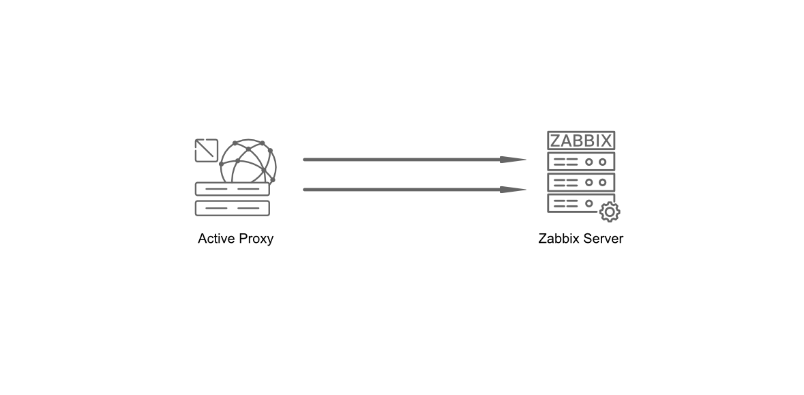

Proxy basics
In this chapter we will cover the basic needs for our proxies. We won't pay attention to active or passive proxies yet this is something we cover later in the next chapters.
Proxy requirements
If you like to setup a few proxies for test or in your environment you will need a few Linux hosts to install the Proxies on. Proxies are also available in containers so a full VM is not needed. However here we will use a VM so we can show you how to install a proxy. Don't worry we will cover containers as well. When it comes to proxies they are very lightweight however since Zabbix 4.2 Proxies are able to do Item value preprocessing and this can use a lot of CPU power. So the number of CPUs and memory will depends on how many machines you will monitor and how many preprocessing rules you have on your hosts.
So in short a Zabbix proxy can be used to:
- Monitor remote locations
- Monitor locations that have unreliable connections
- Offload the Zabbix server when monitoring thousands of devices
- Simplify the maintenance and management
Note
Imagine that you need to restart your Zabbix server and that all proxies start to push the data they have gathered during the downtime of the Zabbix server. This would create a huge amount of data being sent at once to the Zabbix server and bring it to its knees in no time. Since Zabbix 6 Zabbix has added protection for overload. When Zabbix server history cache is full the history cache write access is being throttled. Zabbix server will stop accepting data from proxies when history cache usage reaches 80%. Instead those proxies will be put on a throttling list. This will continue until the cache usage falls down to 60%. Now server will start accepting data from proxies one by one, defined by the throttling list. This means the first proxy that attempted to upload data during the throttling period will be served first and until it's done the server will not accept data from other proxies.
This table gives you an overview of how and when throttling works in Zabbix.
| History write cache usage | Zabbix server mode | Zabbix server action |
|---|---|---|
| Reaches 80% | Wait | Stops accepting proxy data, but maintains a throttling list (prioritized list of proxies to be contacted later). |
| Drops to 60% | Throttled | Starts processing throttling list, but still not accepting proxy data. |
| Drops to 20% | Normal | Drops the throttling list and starts accepting proxy data normally. |
Active versus Passive proxy
Zabbix proxies have been available since Zabbix 1.6, at that time they where available
only as what we know today as Active proxies. Active means that the proxy will
initiate the connection by itself to the Zabbix Server. Since version 1.8.3 passive
proxies where introduced. This allowed the server to connect to the proxy. As mentioned
before Zabbix agents can be both active and passive however proxies cannot be both
so we have to choose the way of the communication when we install a proxy. Just
remember that choosing the proxy mode active or passive has no impact on how
Zabbix agents can communicate with our proxy. It's perfectly fine to have an
active proxy and a passive agent working together.
Active proxy
A proxy in active mode will be the one in control of all the settings like the when
it looks for new configuration changes and pushes new data to the server.
In a standard setup the active proxy will sent it's data every second to the
Zabbix server reload it's config every 10 seconds.
The most important options for an active proxy that we need to remember are changed
in the Zabbix proxy configuration file only.
- ProxyMode: 0
- Server: IP or DNS of the Zabbix server
- Hostname: Proxy name this needs to be exact the same as configured in the frontend.
- ProxyOfflineBuffer: How long we like to keep data in the DB (in hours) if
we can' contact the
Zabbix server. - ProxyLocalBuffer: How long we like to keep data in the DB (in hours) even
we have sent it already to the
Zabbix server. - ProxyConfigFrequency: Replaces ConfigFrequency and defines how often we
request configuration updates (every 10 seconds) from the
Zabbix server. - DataSenderFrequency: How often data is sent to
Zabbix server(every second)
When it comes to configuring the needed resources for the Active proxy we have
to realise that the proxy can use up to 2 trapper items on the Zabbix server
when it tries to connect. One will be used to sent the actual data and the other
trapper will be used to retrieve new configuration changes. So it's best practice
to configure 2 trappers per Active proxy on the server side.

3.1 Active proxy communication
Info
Before Zabbix 7.0 a proxy would reload it's configuration once every 3600 seconds. This has been changed since Zabbix 7.0 as they way proxies handle updates have been optimized.
Warning
Before you continue with the setup of your active or passive proxy make sure
your OS is properly configure like explained in our chapter Getting Started
=> System Requirements. As it's very important to have your firewall and
time server properly configured.
Passive proxy
A proxy in passive mode will have all settings controlled by the Zabbix server.
The most important options for a passive proxy that we need to remember are changed
in the Zabbix server configuration file and the Zabbix proxy as it is the server
that controls when and how proxy data is requested by making use of pollers.
The most important setting we can find back in the proxy configuration file are:
- ProxyMode:1 (passive)
- Server: IP or DNS of the
Zabbix server - ProxyLocalBuffer: How long we like to keep data in the DB (in hours) even
we have sent it already to the
Zabbix server. - ProxyLocalBuffer: How long we like to keep data in the DB (in hours) even
we have sent it already to the
Zabbix server.
And finally the config settings we need to change on our Zabbix server:
- StartProxyPollers: The number of pollers to contact proxies
- ProxyConfigFrequency: Replaces ConfigFrequency and defines how often
Zabbix serverwill sent configuration changes to our proxies. - ProxyDataFrequency: How often
Zabbix serverwill request data from our proxies.
3.2 Passive proxy communication
Proxy configuration changes
Before Zabbix 7.0, a full configuration synchronization was performed by proxies every 3600 seconds (1 hour) by default. With the introduction of Zabbix 7.0, this behavior changed significantly. Now, configuration synchronization occurs much more frequently, every 10 seconds by default, but it's an incremental update. This means that instead of transferring the entire configuration, only the modified entities are synchronized, greatly improving efficiency and reducing network overhead.
Upon initial proxy startup, a full configuration synchronization is still performed. Subsequently, both the server and the proxy maintain a revision of the configuration. When a change is made on the server, only the differences, based on these revision numbers, are applied to the proxy's configuration, rather than a complete replacement of the entire configuration as in older versions. This incremental approach allows for near real-time propagation of configuration changes while minimizing resource consumption.
Proxy runtime control options
Just like the Zabbix server our proxy supports runtime control options always
check latest options with the --help option. But here is a short overview of
options available to use.
- zabbix_proxy --runtime-control housekeeper_execute
- zabbix_proxy --runtime-control log_level_increase=target
- zabbix_proxy --runtime-control log_level_decrease=target
- zabbix_proxy --runtime-control snmp_cache_reload
- zabbix_proxy --runtime-control diaginfo=section
Proxy firewall
Our proxies work like small Zabbix servers so when it comes to the ports to connect
to agents, SNMP, ... nothing changes all ports need to be configured same as on
your server.
When it comes to port for the proxy it depends on our proxy being active or passive.
- Active Proxy: Zabbix server needs to have port
10051/tcpopen so proxy can connect. - Passive Proxy: Needs to have port
10051/tcpopen on the proxy so that theservercan connect to the proxy.